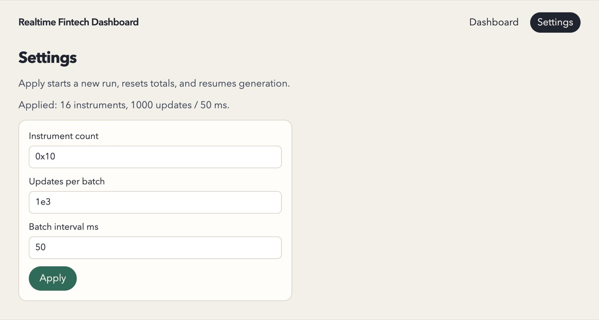
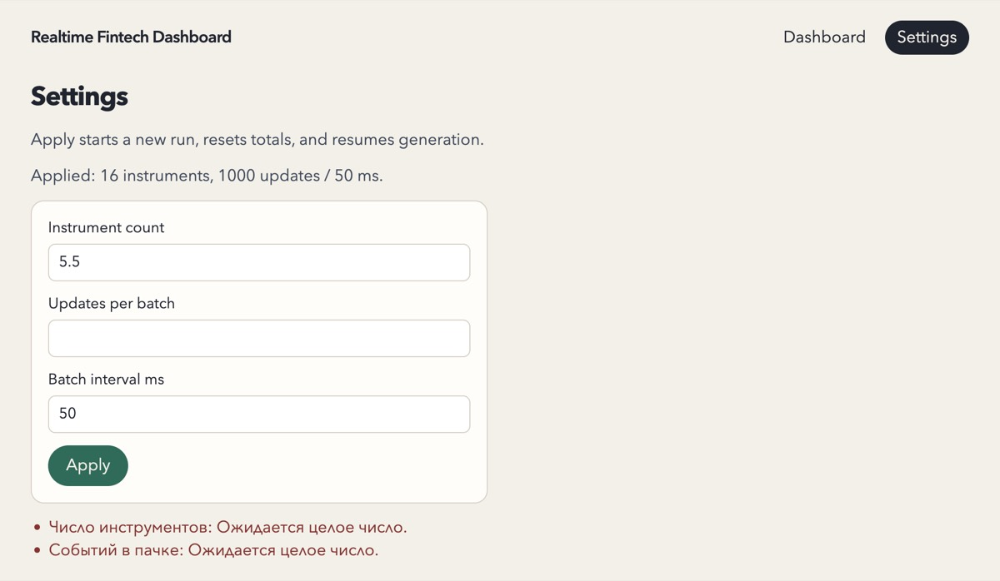

28 октября 2026 · коммит fb39295 · оцениваются разделы ТЗ 1–4, раздел 5
(сабмишен и деплой) не оценивался
Итог
Middle+ · 6 из 10 по планке «супер-специалиста»
По одному этому заданию на роль супер-специалиста кандидата брать не стоит — решает
интервью. Разделы 1–4 работают: тесты зелёные, интерфейс держит максимальную нагрузку с
запасом, защита от результатов старого прогона сделана на двух уровнях. Подводит
инженерное суждение:
архитектура собрана по каталогу паттернов, а не от задачи;
Angular 22 написан без сигналов и без Angular Forms;
модель цены вырождается на высокой скорости;
npm test падает на свежем клоне.
Супер-специалист дал бы те же гарантии примерно вдвое меньшим кодом.
13 из 18требований ТЗ выполнено полностью, остальные пять — частично
43 + 9тестов TypeScript и Rust, все зелёные
120 fpsна максимальной нагрузке при CPU ×6, ни одной long task
11 из 20прогонов, где цена дошла до $0.01 за 10 минут на максимуме
Как проверял
Прочитал весь код: Angular-приложение, воркер, Rust-крейт, тесты и документацию.
Запустил npm test, npm run test:generator и production-сборку.
Сделал свежий клон и запустил тесты так, как предлагает README.
Погонял настоящий скомпилированный .wasm в Node 26 на долгих
симулированных прогонах.
Замерил горячий цикл воркера на настоящем генераторе и сравнил его с плоской
альтернативой.
В браузере проверил дефолты, максимальную нагрузку с замедленным CPU, паузу с переходами
между страницами и граничные вводы в форме.
Код проекта не менялся. Как воспроизвести замеры — в приложении.
Оценки по направлениям
Шкала 0–10, где 10 — уровень супер-специалиста.
Соответствие ТЗ, разделы 1–48
Всё работает. Частично выполнены формат дисбаланса, строгость формы, ошибки
инициализации и модель цены.
Корректность и гонки8
runId проверяется и в воркере, и в главном потоке, суммы точные. Минус —
исключение до try в воркере.
Тесты7
Без реального времени, с фейками и примером из ТЗ. Нет тестов логики воркера и
интеграции с настоящим .wasm.
Rust/Wasm и модель рынка5
Граница памяти сделана грамотно, но модель вырождается, а API передаёт лишнее и не
возвращает длину.
UX и полировка5
Таблица аккуратная, но интерфейс на двух языках, формат ручной, форма слабая.
Воспроизводимость сборки5
npm test падает на свежем клоне, линтеров нет.
Идиоматичный Angular4
Zoneless без единого сигнала, Angular Forms не используются.
Простота архитектуры4
Десять паттернов на ~1340 строк TypeScript, документации больше, чем кода.
Покрытие требований ТЗ (разделы 1–4)
Требование
Статус
Как проверено
Таблица: пять метрик на инструмент, формулы из ТЗ
Да
metrics.spec.ts с примером из ТЗ, браузер
Кумулятивные объём и VWAP, каждая сделка учитывается один раз, стакан не входит в
объём
Да
metrics.spec.ts, все события применяются до снимка
До данных — «н/д» и нулевой объём; «н/д» при нулевом знаменателе
Да
metrics.spec.ts
Цены как валюта, дисбаланс от −1 до +1
Частично
Нет разделителей разрядов, нет «+», возможен «-0.00»
Pause/Resume без догоняния паузы, статус продюсера
Да
batch-pump.spec.ts, браузер
Форма: три целых поля, диапазоны, значения по умолчанию
Частично
0x10, 1e3, 0b11 принимаются как целые
Apply: новый прогон, сброс итогов, старт из паузы
Да
producer-facade.spec.ts
Навигация сохраняет прогон и не создаёт продюсеров
Да
Браузер: одна загрузка воркера за 10 переходов
Результаты старого прогона не перетирают новый
Да
runId в воркере и в главном потоке, тесты
Wasm генерирует обновления, хранит состояние между вызовами, отдаёт пачку нужного
размера
Да
cargo test
Инварианты: цена > 0, bid < ask, количества ≥ 0, цена сделки равна bid или ask
Да
cargo test, но цена прилипает к 1¢
Цены эволюционируют от предыдущих значений
Частично
Аддитивное блуждание вырождается на максимуме
Случайность и логика цены в Wasm, Wasm в воркере
Да
lib.rs, market.worker.ts
Целые центы, округление только при показе, без истории событий
Да
format-metric.ts, адаптер
Интерфейс не тормозит при росте скорости
Да
120 fps, ноль long tasks при CPU ×6
Осмысленные ошибки инициализации
Частично
Сбой new Worker даёт белый экран; исключение до try в
воркере — вечный «Запуск генератора…»
Очистка ресурсов продюсера при замене
Да
free() на Apply, идемпотентный terminate()
Юнит-тесты по четырём пунктам ТЗ
Частично
Все четыре есть, но логика воркера без тестов, а npm test падает на
свежем клоне
Сильные стороны
Требования разделов 1–4 работают: подтверждено тестами и руками в браузере.
Защита от устаревших результатов стоит на двух уровнях. Воркер не поднимает генератор
для start, который устарел, пока грузился Wasm. Главный поток отбрасывает
чужой runId, а на Apply сразу публикует пустой снимок.
Деньги считаются точно: центы целые, округление только при показе, суммы без потерь.
Граница Wasm сделана грамотно. Буфер — плоский массив i32.
Int32Array создаётся после вызова, потому что рост памяти отсоединяет
старый ArrayBuffer. Данные копируются до следующего вызова.
Тесты не ждут реального времени: таймеры и кадры внедряются, воркер подменяется фейком,
seed детерминирован.
Воркер один на всё приложение, terminate() идемпотентен,
free() вызывается при замене генератора.
Производительность с запасом: 120 fps и ни одной long task при 50 × 1000 / 50 мс даже с
замедленным в 6 раз CPU.
Клонирую, делаю npm install, иду в раздел Tests из README и запускаю
npm test. Результат —
Could not resolve "../../../public/market-wasm/market_producer.js". Тесты
зелёные только у того, кто до этого случайно запустил npm start или
npm run build. У test нет pretest, а воркер
импортирует сгенерированный glue прямо из public/, который ещё и лежит в
.gitignore.
Добрый
Минимальный фикс — "pretest": "npm run build:wasm". Правильнее собирать
wasm-pack в wasm/market-producer/pkg, подключить его как локальный пакет,
а .wasm отдавать через "loader": { ".wasm": "file" } в
angular.json. Тогда бинарник получит хэш в имени, как уже получает glue, и
исчезнет захардкоженный абсолютный путь /market-wasm/....
2Модель цены вырождается на максимальной скорости
wasm/market-producer/src/lib.rs:56-63, :98-125
fn step_price(previous: i32, step: i32) -> i32 {
let next = previous.saturating_add(step);
if next < 1 {
1
} else {
next
}
}
Злой
Это аддитивное блуждание ±15¢ с полом в 1¢. Я прогнал твой же .wasm при
1000 событий каждые 50 мс. За 10 минут цена упирается в $0.01 в 11 прогонах из 20. За
час на $0.01 побывали 19 инструментов из 50, а спред доходил до 40× от цены. И ещё
непоследовательность: для bid стоит saturating_add, а
ask = bid + spread — обычное сложение, которое в release-сборке молча
переполнится.
Добрый
Двигай не цену, а её логарифм: шаг в базисных пунктах плюс лёгкий возврат к якорю.
Цена останется положительной без всяких полов, колебания будут пропорциональны уровню,
и инструменты перестанут расползаться от $2.62 до $682 за 10 минут — это реальный
разброс по 20 сидам. Спред задай долей цены, а размерам стакана дай память. Тогда
колонки Spread и Imbalance перестанут быть белым шумом: на
скриншоте Imbalance скачет по всему диапазону.
releaseGenerator() стоит до try. Если там что-то бросит (а
после паники Wasm-инстанс в неизвестном состоянии), failed никто не
отправит, и UI навсегда застрянет на «Запуск генератора…». В главном потоке похожая
история: new Worker() вызывается в конструкторе WorkerClient,
который создаётся внутри app initializer. По спецификации конструктор может синхронно
бросить SecurityError, и тогда пользователь увидит белый экран. Ровно
ради такого случая в ТЗ написано «meaningful initialization errors».
Добрый
Оберни весь startSession в один try, а создание воркера — в
try/catch, который превращает исключение в событие failed. После паники
считай Wasm-инстанс испорченным: пересоздай модуль, а проще — весь воркер.
4Архитектура от каталога паттернов, а не от задачи
export class RunGuard {
constructor(private readonly currentRunId: () => number | null) {}
accept<T extends { runId: number }>(message: T): T | null {
// Чужой runId отбрасывается целиком.
if (message.runId !== this.currentRunId()) {
return null;
}
return message;
}
}
Злой
В docs/design-patterns.md прямо написано: «Ниже ровно десять паттернов».
Дальше перечислены ещё двенадцать «сознательно не использованных» — это весь каталог
refactoring.guru. Command без undo и без очереди. Chain of Responsibility, чтобы
проверить «целое и в диапазоне». Пять классов-стратегий на пять однострочных формул.
А «защищающий Proxy» — это один if, код выше. Всего около 30 файлов и
~1340 строк TypeScript, а документации ~2400 строк вместе с HTML-разметкой — больше,
чем кода. В docs/files.md отдельно объяснено, зачем проекту favicon.
Добрый
Паттерн — это название для уже решённой проблемы, а не цель. Те же гарантии дают
сервис на сигналах, одна чистая функция метрик, один parseSettings и
класс runtime в воркере; кода получается примерно вдвое меньше. Это важно и для
интервью: сейчас просьба «добавь метрику» затрагивает пять мест — стратегию,
аккумулятор, тип показания, снимок и формат, — а должно хватать одного.
Zoneless включён, а сигналов нет ни одного. Состояние живёт в
BehaviorSubject с async, поля формы — обычные мутабельные
свойства OnPush-компонента. Перерисовываются они только потому, что обработчик события
из шаблона сам помечает view; одна мутация из setTimeout молча не попадёт
на экран. Angular Forms не используются вовсе: вместо них ручные
(input)-обработчики и самописная цепочка валидаторов. А
standalone: true дописан везде, хотя с v19 это значение по умолчанию.
Добрый
Для zoneless сигналы — родная модель: signal, computed, в
шаблоне rows(). Reactive Forms или Signal Forms дают ошибку рядом с
полем, aria-invalid, неактивный Apply при ошибках и тестируются без DOM.
Наброски — в разделе «Альтернативный подход».
Средние — качество и идиоматичность
6Форма принимает 0x10, 1e3 и 0b11 как целые
src/app/settings/parse-draft.ts:4-14
Злой
В браузере 0x10 применилось как 16 инструментов, а 1e3 — как
1000 событий (скриншот). Комментарий над функцией гордится, что
тут нет parseInt, «который молча отрежет хвост», зато
Number() молча понимает hex и экспоненту. Пустое поле получает «Ожидается
целое число», ошибки висят списком под формой по-русски при английских подписях
(скриншот), а после Apply в полях так и остаётся
0x10.
Добрый
У целого поля должна быть строгая грамматика: /^\d+$/ до преобразования.
Для пустого поля нужно отдельное «обязательно», ошибку стоит показывать рядом с полем,
а после Apply — сбрасывать форму к применённым значениям.
Сначала validateSettings, потом settingsFromDraft, который
валидирует ещё раз. А если он вернёт null, функция вернёт
errors — в этой точке он гарантированно пуст. Вызывающий получит «ошибок
нет», хотя ничего не применилось.
Добрый
Parse, don’t validate: одна функция parseSettings(draft) возвращает
{ ok: true, value } или { ok: false, errors }. Одна проверка,
а тип не даст забыть ветку.
Заголовок колонки «Imbalance», в ячейке «н/д», над таблицей «Генерация идёт». Подписи
полей по-английски, ошибки по-русски. Выбери язык.
Добрый
ТЗ на английском — значит, интерфейс на английском, а строки в одном месте. Тогда
второй язык — замена словаря, а не правка десятка файлов.
9Форматирование вручную
src/app/format/format-metric.ts
Злой
Самописный formatCents без разделителей разрядов, и объём
2386604 читается с трудом. toFixed(2) у дисбаланса даёт
-0.00 для -1/1999 и не ставит +, хотя в ТЗ «от
−1 до +1».
Добрый
Intl.NumberFormat умеет BigInt и точные десятичные строки, а
signDisplay: 'exceptZero' закрывает и +, и
-0.00. Это несколько строк вместо самописного форматтера.
Сбой генератора посреди работы показывается как «Ошибка инициализации». Любой
worker.onerror, даже исключение через час работы, подписан «Не удалось
запустить Web Worker».
Добрый
Раздели в протоколе ошибку старта и ошибку во время работы. И добавь «Перезапустить»
прямо на дашборд, чтобы не ходить ради этого на страницу настроек.
Единственная настоящая гонка — устаревший start, который дожидается
загрузки Wasm, — живёт в market.worker.ts, и на этот файл нет ни одного
теста. Тест изоляции подаёт обоим инструментам одинаковые сделки, так что баг
«перепутал инструменты» его пройдёт. Фейковый воркер отвечает started
синхронно, поэтому фаза starting не проверяется никогда. Раскладка семи
полей продублирована в Rust и в TS, и ни один тест не проверяет их вместе. А
app.routes.spec.ts — копия файла маршрутов.
Добрый
Вынеси логику воркера в класс ProducerRuntime, которому передаются
loadWasm, post и таймеры. Тогда файл воркера станет 15
строками проводки, а гонку можно будет проверить детерминированно. И добавь один
интеграционный тест: в Vitest вызвать initSync с байтами настоящего
.wasm и прогнать события через настоящий адаптер.
12API Wasm: лишнее туда, недостающее обратно
wasm/market-producer/src/lib.rs:73-88, :136-153
Злой
В Rust передаётся Vec<String> имён только ради
.len(). fillBatch возвращает указатель, а длину знает только
вызывающий. next_batch строит Vec<GeneratedEvent> и
тут же копирует его в буфер. Индексы и количества хранятся в i32, и
clippy pedantic ругается на знаковые касты. Panic hook нет, так что паника превратится
в безликое unreachable.
Добрый
Передавай instrument_count: u32, возвращай длину вместе с указателем или
экспортируй EVENT_STRIDE из Rust и сверяй его в TS при старте. Пиши сразу
в буфер, типы — u32. console_error_panic_hook подключается
одной строкой.
Мелочи, к которым докапывается злой
Где
Злой
Добрый
SnapshotGate
Склеивает снимки «не чаще кадра», но пачки идут не чаще раза в 50 мс, а кадр длится
8–16 мс. По изменениям DOM выходит около 20 снимков в секунду — по одному на пачку.
Если троттлить, то фиксированной частотой интерфейса (например, 10 Гц), независимо от
интервала пачек.
Горячий цикл
Индекс превращается в строку, строка ищется в Map, событие проходит
через пять объектов и создаёт несколько BigInt. Около 90% времени воркера уходит на
обёртку вокруг Wasm.
На максимуме ТЗ это меньше 1% CPU, оптимизировать не надо. Но знать, куда уходит
время, нужно.
BigInt на каждое событие
number здесь точен на дни непрерывной генерации на максимуме, а за
BigInt платишь на каждом событии.
Суммируй пачку в number и сворачивай в BigInt раз на пачку, или держи
u64 в Rust.
PRNG
xorshift32 и %: период 2³²−1, семь чисел на событие, и на максимуме
последовательность повторяется примерно через 8.5 часа. % 2 берёт
самый слабый младший бит.
PCG32 или xoshiro128++ через rand_core, диапазон без смещения.
Стакан и спред
Генерируются заново на каждом событии, поэтому Imbalance скачет по всему диапазону
от −1 до +1.
Дай им память — см. находку 2.
Частичная конструкция
MarketGenerator создаётся до InstrumentBook; если книга
бросит, генератор не освобождён.
Сначала всё, что не держит ресурсов, потом Wasm-объект; или
try/finally.
SessionMachine.phase
Публичное мутабельное поле у конечного автомата.
private с геттером или сигнал только для чтения.
Типы воркера
self as unknown as {...} вместо типов воркера.
tsconfig.worker.json с lib: ["webworker"], как делает
ng generate web-worker.
Линтеры
prettier --check падает на producer-facade.spec.ts, ESLint
не настроен, clippy pedantic недоволен кастами.
angular-eslint, cargo clippy -D warnings и
prettier --check в npm run lint.
Комментарии
Шапка «Зачем / Что делает» в каждом файле, включая SCSS и Cargo.toml, а
ниже та же мысль ещё раз.
Комментарий нужен для ограничений, которые код не может показать сам.
Apply без отклика
Нажал Apply — изменилась только строка «Applied», поля остались 0x10.
Короткое подтверждение и сброс формы к применённым значениям.
Seed не виден
Генератор детерминирован, но seed нигде не показан, и прогон не воспроизвести.
Показывай seed и runId в статусе, разреши задать seed в настройках.
Замеры
Дрейф цены на настоящем .wasm
11 из 20прогонов дошли до $0.01 за 10 минут (1 инструмент)
19 из 50инструментов побывали на $0.01 за час (50 инструментов)
40×максимальный спред относительно цены
Настройки — 1000 событий каждые 50 мс. Скрипт гоняет
public/market-wasm/market_producer_bg.wasm в Node без браузера и таймеров,
поэтому «10 минут» и «час» — это число пачек при 20 пачках в секунду. Цены через 10 минут
по 20 сидам — от $2.62 до $682.05 при старте $100.00. Сиды фиксированы, результат
повторяется один в один.
Браузер на максимальной нагрузке
120 fpsчастота кадров за 5 секунд
0long tasks за то же окно
18 мсхудший кадр
1загрузка скрипта воркера за 10 переходов между страницами
Dev-сборка в браузере Cursor, 50 инструментов × 1000 событий каждые 50 мс, CPU замедлен в
6 раз через DevTools. Без замедления при 16 инструментах — те же 120 fps, худший кадр 11
мс. Загрузки воркера посчитаны через Resource Timing после переходов по внутренним
ссылкам.
Время воркера на пачку из 1000 событий
Только fillBatch в Wasm0.033 мс
Текущий конвейер воркера0.322 мс
Плоский Int32Array и свёртка в BigInt0.045 мс
50 инструментов, среднее по 5000 пачкам после 500 прогревочных, Node 26 на Apple Silicon.
Текущий конвейер — это адаптер в объекты, пять стратегий с BigInt, снимок и
structuredClone. Абсолютные числа плавают между запусками (в первой сессии
было 0.025 / 0.251 / 0.035 мс), но соотношения стабильны: текущий конвейер примерно в 10
раз дороже самой генерации и в 7 раз дороже плоского варианта. На максимуме ТЗ, то есть
при 20 пачках в секунду, это меньше 1% CPU воркера, так что проблемы производительности
нет.
Скриншоты
Дашборд при 50 × 1000 / 50 мс: статус по-русски над английской таблицей, объём без
разделителей разрядов, Imbalance скачет по всему диапазону.

После Apply: «Applied: 16 instruments, 1000 updates / 50 ms», а в полях остались
0x10 и 1e3.

Ошибки валидации — списком под формой, по-русски и без привязки к полям; пустое поле
получает «Ожидается целое число».
Альтернативный подход
Разделение «генерация в Rust, метрики в TypeScript» само по себе нормальное: формулы на
TypeScript проще менять прямо на интервью. Менять стоит другое.
Генератор
Лог-цена с возвратом к якорю, спред как доля цены, стакан с памятью, а сторона сделки
слегка зависит от дисбаланса. Набросок:
Ещё три правки: PCG32 вместо xorshift32, instrument_count: u32 вместо списка
строк и длина буфера вместе с указателем.
Воркер
Логика живёт в тестируемом классе, а сам файл воркера только связывает его с
postMessage. Горячий цикл читает Int32Array напрямую в
типизированные массивы и сворачивает суммы в BigInt раз на пачку:
for (let o = 0; o < view.length; o += STRIDE) {
const i = view[o];
const qty = view[o + 2];
last[i] = view[o + 1];
bid[i] = view[o + 3];
ask[i] = view[o + 4];
bidQty[i] = view[o + 5];
askQty[i] = view[o + 6];
batchVolume[i] += qty;
batchNotional[i] += view[o + 1] * qty;
}
for (let i = 0; i < instrumentCount; i++) {
if (batchVolume[i] === 0) continue;
volume[i] += BigInt(batchVolume[i]);
notional[i] += BigInt(batchNotional[i]);
}
Суммы пачки в Float64Array точны: даже 1000 сделок по максимальной цене
i32 с количеством 100 дают меньше 2⁵³. Снимок стоит отправлять с
фиксированной частотой интерфейса, например 10 Гц, независимо от интервала пачек.
Отдельно стоит взвесить воркер на каждый прогон вместо одного долгоживущего. На Apply
старый воркер завершается через terminate(), а новому передаётся уже
скомпилированный WebAssembly.Module. Тогда устаревшие сообщения невозможны по
построению, а паника Wasm умирает вместе с воркером. runId стоит оставить как
вторую линию защиты. Нынешний вариант тоже допустим; важно, чтобы кандидат умел объяснить
компромисс.
Angular
Вместо фасада, команд, фабрики, прокси и автомата хватит одного сервиса на сигналах. Pause
и Resume добавляются по три строки каждая.
Код написан с помощью AI: в коммитах стоит Co-authored-by: Cursor. ТЗ это
разрешает, но требует понимать решение, поэтому вопросы проверяют именно понимание.
Вопрос
Что хотим услышать
1. Почему Int32Array над memory.buffer создаётся после
fillBatch, а не один раз?
Рост памяти Wasm отсоединяет старый ArrayBuffer.
2. Два Apply подряд, пока Wasm ещё грузится. Пройди по коду: что увидит UI?
acceptedRunId в воркере, RunGuard в главном потоке, пустой
снимок на Apply.
3. Что будет на экране через час на максимальных настройках?
Дрейф к $0.01 и предложение мультипликативной модели.
4. Сколько снимков в секунду склеивает SnapshotGate при интервале 50
мс?
Ноль — и что сделать вместо этого.
5. Когда number начал бы терять центы в VWAP? Сколько стоит BigInt?
Оценка порядка величины, а не «на всякий случай».
6. Добавь метрику «число сделок» прямо сейчас.
Сколько файлов он тронет и не забудет ли тип показания, снимок и формат.
7. Убери половину паттернов. Какие и почему?
Command, Proxy, Chain, Factory Method — без сожалений.
8. Что увидит пользователь, если конструктор Worker бросит
SecurityError?
Белый экран — и как это исправить.
9. Почему один долгоживущий воркер, а не воркер на каждый прогон?
Изоляция и устаревшие сообщения против стоимости старта; оба варианта допустимы.
Приложение: как воспроизвести замеры
Соберите генератор: npm run build:wasm — появится
public/market-wasm.
Дрейф цены: сохраните первый скрипт в корень репозитория как drift.mjs и
запустите node drift.mjs из корня. Около 10 секунд.
Бенчмарк: сохраните второй скрипт в корень как bench.ts, соберите его
./node_modules/.bin/esbuild bench.ts --bundle --platform=node --format=esm
--target=es2022 --outfile=bench.mjs и запустите node bench.mjs из
корня. Скрипт импортирует настоящие адаптер и метрики проекта.
Браузер: npx ng serve, в DevTools замедлите CPU в 6 раз, примените 50 / 1000
/ 50 и посчитайте кадры через requestAnimationFrame и long tasks через
PerformanceObserver в течение 5 секунд.
drift.mjs — дрейф цены на настоящем генераторе
import { readFileSync } from 'node:fs';
import { initSync, MarketGenerator } from './public/market-wasm/market_producer.js';
const { memory } = initSync({ module: readFileSync('./public/market-wasm/market_producer_bg.wasm') });
const STRIDE = 7;
function run(seed, instruments, updatesPerBatch, batches) {
const names = Array.from({ length: instruments }, (_, i) => 'I' + i);
const gen = new MarketGenerator(seed, names);
const touchedFloor = new Uint8Array(instruments);
const lastBid = new Int32Array(instruments).fill(10_000);
let maxSpreadToPrice = 0;
for (let b = 0; b < batches; b++) {
const ptr = gen.fillBatch(updatesPerBatch);
const view = new Int32Array(memory.buffer, ptr, updatesPerBatch * STRIDE);
for (let i = 0; i < updatesPerBatch; i++) {
const o = i * STRIDE;
const idx = view[o];
const bid = view[o + 3];
const ask = view[o + 4];
lastBid[idx] = bid;
if (bid <= 1) touchedFloor[idx] = 1;
const ratio = (ask - bid) / bid;
if (ratio > maxSpreadToPrice) maxSpreadToPrice = ratio;
}
}
gen.free();
const floorCount = touchedFloor.reduce((a, v) => a + v, 0);
return { floorCount, lastBid: Array.from(lastBid), maxSpreadToPrice };
}
// 1000 событий каждые 50 мс = 20 пачек в секунду.
const batchesPerSecond = 20;
let hit = 0;
const finals = [];
for (let seed = 1; seed <= 20; seed++) {
const r = run(seed, 1, 1000, batchesPerSecond * 600);
hit += r.floorCount;
finals.push((r.lastBid[0] / 100).toFixed(2));
}
console.log(`1 инструмент, 10 минут: до $0.01 дошли ${hit} из 20 прогонов`);
console.log('цена через 10 минут по сидам, $:', finals.join(' '));
const r = run(7, 50, 1000, batchesPerSecond * 3600);
console.log(`50 инструментов, 1 час: на $0.01 побывали ${r.floorCount} из 50`);
console.log(`максимальный спред к цене: ${r.maxSpreadToPrice.toFixed(1)}x`);
bench.ts — время воркера на пачку
import { readFileSync } from 'node:fs';
import { initSync, MarketGenerator } from './public/market-wasm/market_producer.js';
import { readMarketUpdates } from './src/app/wasm/wasm-adapter';
import { InstrumentBook } from './src/app/metrics/instrument-book';
import { instrumentNames } from './src/app/producer/session-factory/session-factory';
const { memory } = initSync({ module: readFileSync('./public/market-wasm/market_producer_bg.wasm') });
const STRIDE = 7;
const INSTRUMENTS = 50;
const PER_BATCH = 1000;
const WARMUP = 500;
const BATCHES = 5000;
const names = instrumentNames(INSTRUMENTS);
function timeIt(label: string, body: (gen: MarketGenerator) => void): void {
const gen = new MarketGenerator(42, names);
for (let i = 0; i < WARMUP; i++) body(gen);
const t0 = performance.now();
for (let i = 0; i < BATCHES; i++) body(gen);
const perBatch = (performance.now() - t0) / BATCHES;
gen.free();
console.log(`${label.padEnd(44)} ${perBatch.toFixed(3)} мс на пачку`);
}
timeIt('только fillBatch в Wasm', (gen) => {
gen.fillBatch(PER_BATCH);
});
{
const book = new InstrumentBook(names);
timeIt('текущий конвейер воркера', (gen) => {
const ptr = gen.fillBatch(PER_BATCH);
for (const update of readMarketUpdates(memory, ptr, PER_BATCH, names)) book.apply(update);
structuredClone(book.snapshot());
});
}
{
const last = new Int32Array(INSTRUMENTS);
const bid = new Int32Array(INSTRUMENTS);
const ask = new Int32Array(INSTRUMENTS);
const bidQty = new Int32Array(INSTRUMENTS);
const askQty = new Int32Array(INSTRUMENTS);
const batchVolume = new Float64Array(INSTRUMENTS);
const batchNotional = new Float64Array(INSTRUMENTS);
const volume: bigint[] = new Array(INSTRUMENTS).fill(0n);
const notional: bigint[] = new Array(INSTRUMENTS).fill(0n);
const snapshot = new Float64Array(INSTRUMENTS * 6);
timeIt('плоский Int32Array + свёртка в BigInt', (gen) => {
const ptr = gen.fillBatch(PER_BATCH);
const view = new Int32Array(memory.buffer, ptr, PER_BATCH * STRIDE);
batchVolume.fill(0);
batchNotional.fill(0);
for (let o = 0; o < view.length; o += STRIDE) {
const i = view[o];
const qty = view[o + 2];
last[i] = view[o + 1];
bid[i] = view[o + 3];
ask[i] = view[o + 4];
bidQty[i] = view[o + 5];
askQty[i] = view[o + 6];
batchVolume[i] += qty;
batchNotional[i] += view[o + 1] * qty;
}
for (let i = 0; i < INSTRUMENTS; i++) {
if (batchVolume[i] === 0) continue;
volume[i] += BigInt(batchVolume[i]);
notional[i] += BigInt(batchNotional[i]);
}
for (let i = 0; i < INSTRUMENTS; i++) {
const v = volume[i];
const depth = bidQty[i] + askQty[i];
const base = i * 6;
snapshot[base] = last[i];
snapshot[base + 1] = ask[i] - bid[i];
snapshot[base + 2] = Number(v);
snapshot[base + 3] = v === 0n ? NaN : Number((notional[i] + v / 2n) / v);
snapshot[base + 4] = depth === 0 ? NaN : (bidQty[i] - askQty[i]) / depth;
}
structuredClone(snapshot);
});
}